第五篇 · 垃圾收集与运行时协作
第24章 Shenandoah 与分代演进
并发移动有另一套实现选择：从转发访问到批量更新引用，再看分代增加的卡记录、晋升和空间协调。
本章基于 Java 开发工具包（Java Development Kit，JDK）25.0.5.0.2 与 HotSpot；垃圾收集（Garbage Collection，GC）的实现结论定位到固定 OpenJDK 提交，语言与类库语义单独注明。容量单位采用兆二进制字节（mebibyte，MiB）和千二进制字节（kibibyte，KiB）。前置为对象、分配和执行引擎；源码阅读、运行说明与证据索引相互对应。
24.1 标记、转移与引用更新
24.1.1 对象移动后仍须保持身份
Shenandoah以并发标记找到存活对象，选择转移集合并把相应对象移到新位置，再并发更新堆中引用。转发信息将旧对象位置与新位置关联，应用加载引用时通过屏障取得正确对象；多个参与者竞争搬移时必须有唯一有效的转发结果。
固定实现的加载引用屏障先解析转发，必要时由应用协作转移；知道引用槽位置时可以尝试修复该槽。对象头如何协作以第10章与当前ShenandoahForwarding实现为准，不能把历史“每对象额外一个Brooks指针字”的图当成当前固定布局。
24.1.2 暂停边界与并发阶段
Init Mark建立起始边界，随后并发处理根与标记；Final Mark完成标记闭包及集合准备，再并发转移；Init Update Refs与后续并发更新建立引用修复过程，Final Update Refs处理收尾边界并使空间可回收。阶段可能缩短或跳过，实际以本轮日志为准。
与Z Garbage Collector（ZGC）相比，两者都有并发移动、访问协作与短暂停，但引用编码、转发位置和批量更新策略不同。不能只用“一个读屏障、一个写屏障”概括全部版本细节，更不能据此直接推出性能高低。

24.2 屏障与空间保障
24.2.1 读取、写入与转移共同保持正确
加载屏障处理转发与访问修复；起始快照（Snapshot-At-The-Beginning，SATB）相关写入处理保留标记所需旧目标。分代模式另有卡记录维护老到年轻入口；原子操作与数组复制也需要遵守引用协议，不能只在普通字段赋值上补一个钩子就保证完整。
本机可在压缩引用条件下运行Shenandoah，和ZGC的引用编码方案不同。两种模式的屏障集合由配置初始化，不是Java源代码决定；对照模式前必须保留有效选项和启动时报告。
24.2.2 并发转移也需要目标空间
应用分配和收集器搬移同时争取可用区域。启动太晚可能在仍有可回收垃圾时缺少周转空间；启动较早又可能增加并发工作频率。预留、启发式启动和分配节流共同缓和这种冲突，但不能将“有垃圾”推导为“下一次分配一定不等待”。
节流可以让应用分配等待以给并发工作争取时间；这类等待与全局暂停应分开记录。额外空间不是无效浪费，而是让对象移动和应用继续分配同时成立的工作预算。
24.3 分代模式
24.3.1 年龄、晋升与代际协作
分代模式把主要年轻对象追踪与老代工作分开，结合年龄信息决定对象或区域的晋升；既可能复制到老代，也可能将满足条件的区域就地改变代际归属。promote_regions_in_place与evacuate_object说明两条路径，不能把所有晋升等同于搬移字节。
本例年轻代GC(1)计划59个普通区域就地晋升；日志也出现Promotion failed调试条目。固定实现允许某次尝试老代复制不成功后回退到年轻代转移，所以这些条目本身不等于退化收集、完整堆回收或Java内存耗尽。

24.3.2 跨代与并发增加的工作
年轻代回收须从老到年轻的引用补齐入口；固定写后屏障只对满足老源／年轻目标等条件的引用标脏相应卡。卡处理与根扫描合作，使年轻代范围缩小而不漏存活对象。晋升和对象移动后也要维护新位置的记忆信息。
若大多数对象短命，年轻代追踪可能减少老代重复工作；若长期存活多、跨代更新密集，屏障和维护成本可能增加。两个模式虽然使用同一个对象图，内部工作量不同，这正是机制比较要解释的内容。
24.4 退化与完整堆回收
24.4.1 并发不能继续时的有界恢复
并发周期不能按计划完成时，Shenandoah可以在全局暂停（Stop-The-World，STW）下从相应退化点继续工作；实现区分周期外、根、标记、转移和引用更新等位置。退化不是把所有已做工作必然清零重来，也不是继续让应用无限分配。
ShenandoahDegenGC::op_degenerated按退化点推进后续阶段。如果恢复失败或进展不足，可进一步进入Full GC；其代际策略与非分代判断也存在区别。必须同时读触发原因、退化点、空间与后续结果。

24.4.2 不要混淆三种日志层次
对象级晋升尝试失败是一条局部分支；Degenerated GC是收集模式退化；Full GC是更全面的后备路径。某行含有failed不能把三个概念合并。退化可能增加长暂停，Full GC也可能有不同的整理和空间代价。
本次satb与generational汇总均为0次Degenerated、0次Full GC。记录足以说明正常窗口未走这些路径，不能声称已实测退化耗时或完整恢复成功。为制造退化而故意压垮空间或注入失败不在本轮授权内，本章以固定源码完成分支解释。
24.5 JDK 25的模式与可用性
24.5.1 产品化与默认值分别核对
JDK 25分代模式已是产品功能，固定ShenandoahGenerationalMode::is_experimental返回假；普通选项ShenandoahGCMode默认仍为satb。本机默认参数表实际报告product／default，显式generational启动成功，均未使用实验解锁。
产品化不等于默认启用，也不意味着所有标为JDK 25的发行包都包含该收集器。必须分别核查源码状态、实际发行版编译选项及平台启动结果；不能从一次运行推广到其他厂商与操作系统。
24.5.2 等价条件与机制比较表
本机Homebrew 25.0.5.0.2、macOS AArch64已确认包含并可运行两种模式；构建定义对架构还有可用性条件。没有新增Linux、x86实机或其他厂商环境，未实测的平台仍只作源码研究。
| 条件 | satb与generational本轮口径 | 限制 |
|---|---|---|
| 输入 | 同CH23类文件；204 MiB累计载荷；同一持有关系 | 阶段派生速率因实际执行进度不同 |
| 资源 | 128 MiB固定堆；2可见处理器；2并行／1并发工作者 | 内部代际预算由各模式管理 |
| 实际结果 | 均正常退出；退化／Full均0次 | 不是故障恢复实测或吞吐排名 |
同口径机制表先固定比较维度，实际容量、阶段时间和应用完成情况仍回到各章原始记录。
| 收集器／模式 | 主要恢复空间方式 | 应用与收集如何重叠 | 共同需要记账的成本 |
|---|---|---|---|
| Serial | 年轻代复制；完整堆整理 | 主要堆工作在暂停内、单工作者 | 存活量、根扫描、复制／整理及暂停 |
| Parallel | 年轻代并行转移；并行完整回收路径 | 主要堆工作在暂停内、多工作者 | 工作不均、协调、带宽和暂停 |
| Epsilon | 不回收对象空间 | 应用继续分配，直到自然退出或容量不足 | 累计分配和堆提交，不能只按存活集配堆 |
| Garbage-First（G1） | 区域转移、并发标记与混合回收 | 标记等工作并发；转移暂停 | 卡维护、入口扫描、预测误差及转移预留 |
| ZGC（分代） | 分代并发追踪与重定位 | 短暂停切换，大量工作与应用重叠 | 访问／存储协议、并发资源与分配余量 |
| Shenandoah satb／generational | 并发标记、转移及引用更新；分代增加晋升／卡记录 | 短暂停与并发阶段组合，可有分配节流 | 屏障、并发工作、空间预留与后备路径 |
结合第21—23章：Serial／Parallel主要暂停内转移，G1分区选择并组合标记与混合转移，ZGC与Shenandoah将大量移动工作并发化，Epsilon不恢复对象空间。选择时要补齐真实负载的吞吐、延迟、资源总预算及存活图；本篇不按单条暂停给出排序。
观察与解释边界
| 实际模式 | 应用完成量 | 成功并发收集 | 后备路径与限制 |
|---|---|---|---|
| satb | 204 MiB载荷；48批完成，退出0 | 10次 | 退化0、Full 0；未测故障恢复耗时 |
| generational | 同一类文件及载荷；48批完成，退出0 | 11次；退出状态记录cancelled | 退化0、Full 0；退出时状态不等于未完成应用 |
CH24-O01原样复用CH23-E01，satb与generational都退出0。前者汇总10次成功并发收集，后者11次；两者退化和Full均0次。分代日志包含Global／Young、就地晋升计划、局部晋升回退及并发更新引用。关闭时正在结束的周期与汇总分母须按原始日志解释，次数差异不作性能排名。
模式默认值另以PrintFlagsFinal取得；源类文件摘要与CH23相同。两模式堆、处理器和工作线程上限一致，内部触发时机及工作集合不强行伪装相同。
两模式可用性、正常并发阶段与晋升已观察；退化／Full计数均0，失败升级路径按源码解释，未主动制造故障或性能基准；其他平台未实测。
来源与回顾
- CH24-S01 并发阶段：ShenandoahConcurrentGC；标记、转移及引用更新边界。
- CH24-S02 屏障：load_reference_barrier_mutator；write_ref_field_post；转发访问与跨代卡记录。
- CH24-S03 晋升及回退：promote_regions_in_place；evacuate_object；就地晋升、复制晋升失败后的年轻代回退。
- CH24-S04 退化路径：ShenandoahDegenGC::op_degenerated；退化点、失败与进展不足后的升级。
- CH24-S05 产品状态：is_experimental=false；固定25更新版分代产品状态。
- CH24-S06 默认选项：ShenandoahGCMode=satb；默认与显式模式选择。
- CH24-S07 构建可用性：JVM_FEATURES_CHECK_SHENANDOAHGC；架构条件不等于所有发行版均包含。
- CH24-S08 转发及对象头协作：ShenandoahForwarding::get_forwardee / try_update_forwardee；当前标记字及转发信息，不沿用旧布局。
源码固定提交：1775ea114f649f0314e4e43eb6c802ff16dfab7c。实现定位和完整命令见证据索引及运行记录；插图表达机制，没有填入推测的时间或地址。
回顾：先确定哪些引用或状态必须保留，再看工作在哪里执行、消耗哪些资源。思考：本轮Promotion failed为何不等于Degenerated GC？为何分代已经产品化但默认仍是satb？同一程序的收集次数不同为何不足以评价性能？